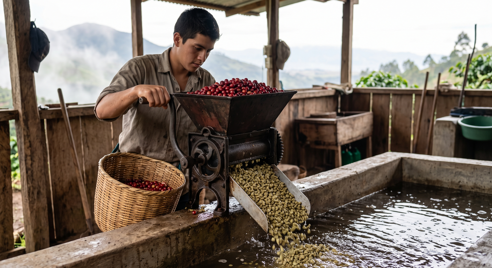
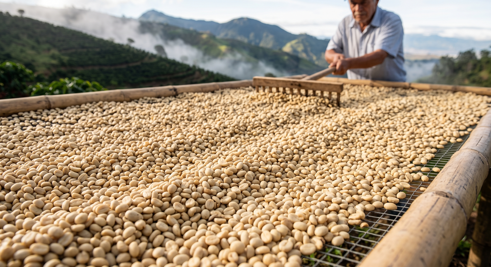
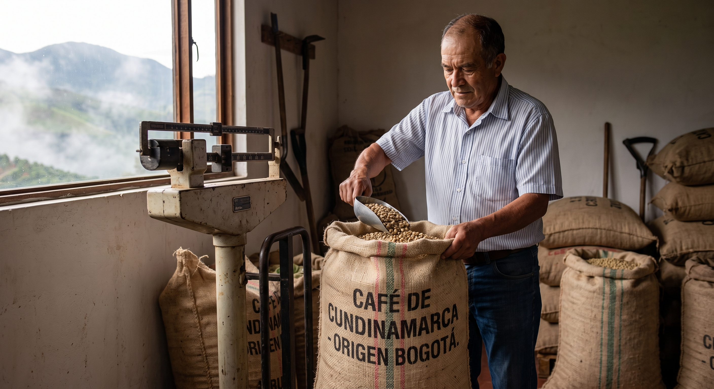
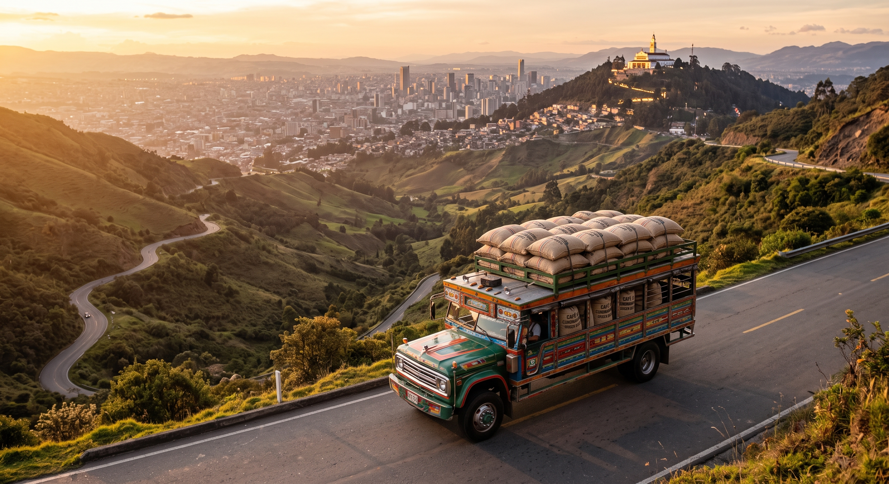
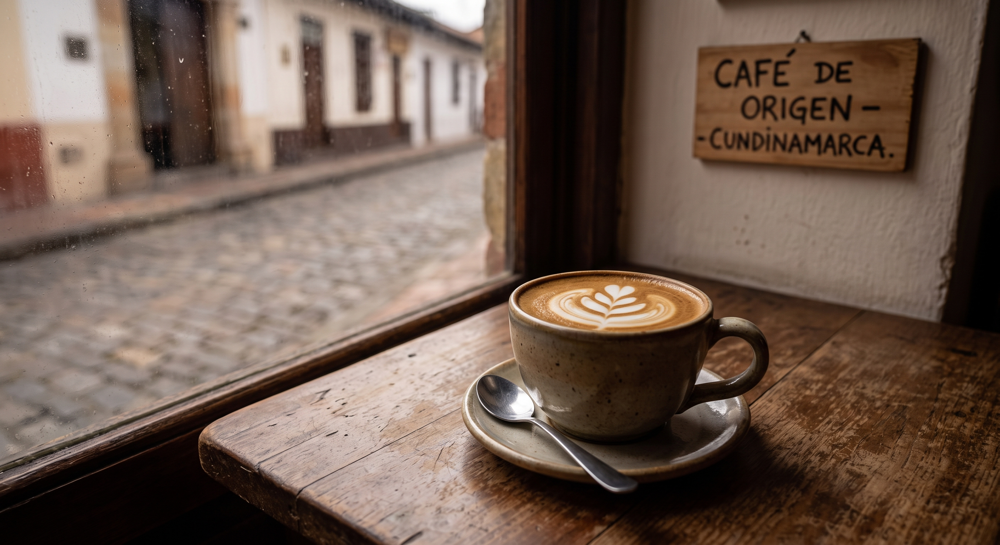

Contenido Multimedia
Video descargado
Ir arribaUbicación
Ir arribaWidgets
Metereología
BOGOTÁ Zona cafeteraImágenes
Calendario de Eventos y Catas
Ir arribaNoticias
El auge del café de especialidad
El consumo de café de origen único y métodos de extracción artesanal crece un 25% este año.
Compromiso ecológico y sostenible
Nuevos convenios aseguran que todas nuestras variedades cuentan con sello de comercio justo.
Ir arribaGalería: El viaje del café




